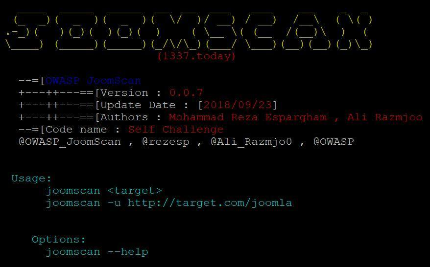
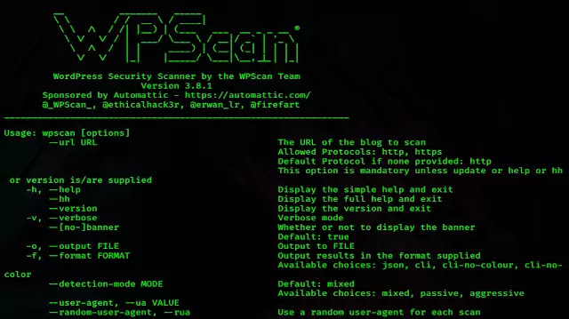

I - Introduction
Qu'es ce que le Scanning ?
Le Scanning c'est, comme son nom l'indique, le fait de scanner un serveur pour y trouver des services comme un serveur SSH, FTP etc...
Le scanning est très important pour trouver des services vulnérables comme un serveur FTP pas à jour par exemple.
Pourquoi scanner ?
Comme dit plus tôt, le scanning est très important pour trouver des services vulnérables. Il permet aussi de savoir sur quel OS se trouve le serveur scanné
II - Les outils
Nmap
Nmap est un outil aussi connus que génial. En effet, c'est l'outil principal que vous allez utiliser pour scanner les serveurs afin d'y trouver des services. Nmap vous permet de connaitres les services actifs sur le serveur scanné mais aussi le systèmes d'exploitation sur lequel est le serveur. Nmap intègre même des plugins pour scanner les services et y trouver des vulnérabilités
Commandes :
Utilisation :
nmap -A 10.10.10.10
Scanner tout les ports :
nmap -A 10.10.10.10 -p-
Scanner les services pour y trouver des vulnérabilités :
nmap -A 10.10.10.10 --script vuln
Une version windows est disponible pour Nmap : Nmap for windows
Gobuster, Dirbuster et DirSearch
Ces 3 outils sont tous des outils de scannig de site web, GoBuster et DirSearch sont des outils en ligne de commandes alors que DirBuster est un outil avec une interface graphique.
Ils scannent les fichiers/dossiers cachés sur un site web afin de trouver des données intéressantes
Commandes DirSearch :
Utilisation : dirsearch -u http://10.10.10.10/ -w wordlist.txt
Afficher l'aide :
dirsearch -h
Ajouter des extenssions :
dirsearch -u http://10.10.10.10/ -e php,hyml,txt,bak,htm -w wordlist.txt
Une version windows est disponible pour DirSearch : DirSearch for windows
Commandes GoBuster :
ATTENTION : GoBuster n'est pas inclus dans kali, pour l'installer : sudo apt install gobuster -y
Utilisation :
gobuster dir -u http://10.10.10.10/ -w wordlist.txt
Afficher l'aide :
gobuster -h
Ajouter des extenssions :
gobuster dir -u http://10.10.10.10/ -w wordlist.txt -x php,html,htm,txt,bak
Utilisation DirBuster :
DirBuster à une interface graphique, je vous redirige vers ce site pour en savoir plus mais cet outils est très facile à utiliser
Une version windows est disponible pour DirBuster : DirBuster for windows
Nikto

Nikto est un scanneur CGI écrit en Perl, utilisant LibWhisker de rfp pour effectuer des contrôles de sécurité ou d'information rapides.
Commandes :
Utilisation :
nikto -host http://10.10.10.10/
Afficher l'aide :
nikto -h
JoomScan
JoomScan, abréviation de [Joom]la Vulnerability [Scan]ner. C'est un projet en langage de programmation perl pour détecter les vulnérabilités du CMS Joomla et les analyser.
Commandes :
Utilisation :
jommscan [OPTION]
Scanner un site joomla :
joomscan --url http://joomla.com/
WpScan
WPScan analyse les installations WordPress distantes pour trouver des problèmes de sécurité.
Commandes :
Utilisation :
wpscan --url [URL] [OPTIONS]
Chercher les utilisateurs du site :
wpscan --url http://10.10.10.10/ -eu
BruteForcer la page de login :
wpscan --url http://10.10.10.10/ --passwords /usr/share/wordlists/rockyou.txt
Une version windows est disponible pour WpScan : Installer WpScan sur windows
III - Les WordLists pour le scanning de sites web
DirBuster
Télécharger les wordlists de DirBuster
DirSearch
Télécharger la wordlist de DirSearch
IV - Conclusion
Conclusion
- Le Scanning est très important car il permet de scanner un serveur pour afin de découvrir les services qu'il héberge pour pouvoir ensuite exploiter de potentielles failles sur les services en question
- Des outils existes pour scanner les serveur, les sites web et même les CMS